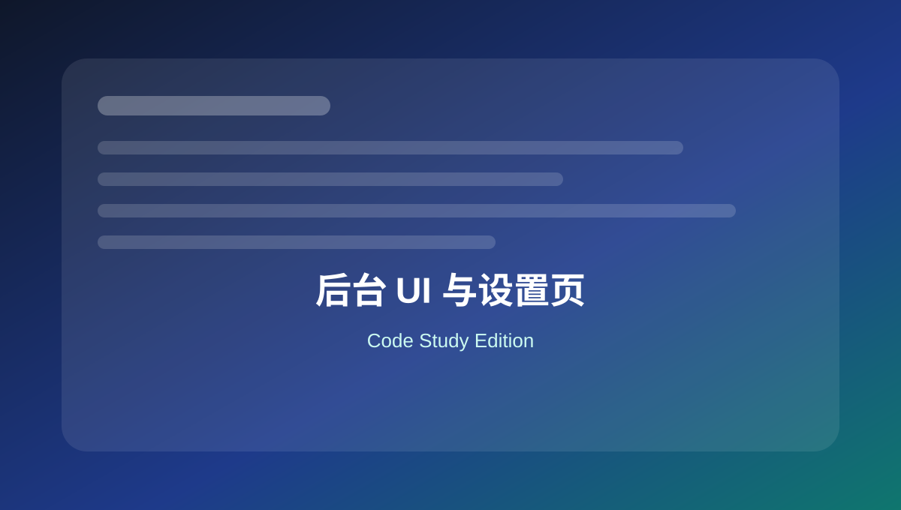

07 后台 UI 与设置页
整理后台菜单页、Settings API、Dashboard Widget、Admin Notice 和后台资源加载。

本页关键词
admin_menu
settings API
admin_notices
wp_dashboard_setup
admin_enqueue_scripts
学习目标
- 会添加后台菜单页
- 会保存简单设置
- 会添加后台提醒
- 会只在后台指定页面加载资源
代码使用提醒
本页代码适合用于学习和研究。复制到正式网站前，请先备份，并优先在测试环境验证。
涉及用户输入、后台保存、接口请求、删除操作和邮件发送时，要同时考虑权限、nonce、sanitize、validate 和 escape。
1. 添加后台设置页
基础
<?php
function mysite_add_admin_menu() {
add_options_page(
'My Site Settings',
'My Site Settings',
'manage_options',
'mysite-settings',
'mysite_render_settings_page'
);
}
add_action( 'admin_menu', 'mysite_add_admin_menu' );
function mysite_render_settings_page() {
echo '<div class="wrap"><h1>My Site Settings</h1></div>';
}
add_options_page 会把页面放到“设置”菜单下。
2. 注册设置项
基础
<?php
function mysite_register_settings() {
register_setting( 'mysite_settings_group', 'mysite_phone', array(
'type' => 'string',
'sanitize_callback' => 'sanitize_text_field',
'default' => '',
) );
}
add_action( 'admin_init', 'mysite_register_settings' );
保存设置时必须 sanitize。
3. 设置页表单
实用
<?php
function mysite_render_settings_page() {
?>
<div class="wrap">
<h1>My Site Settings</h1>
<form method="post" action="options.php">
<?php settings_fields( 'mysite_settings_group' ); ?>
<label>
电话：
<input type="text" name="mysite_phone" value="<?php echo esc_attr( get_option( 'mysite_phone', '' ) ); ?>">
</label>
<?php submit_button(); ?>
</form>
</div>
<?php
}
options.php 会处理 Settings API 的保存流程。
4. 后台提醒 Admin Notice
实用
<?php
function mysite_backup_admin_notice() {
if ( ! current_user_can( 'manage_options' ) ) {
return;
}
echo '<div class="notice notice-warning is-dismissible"><p>';
echo esc_html__( '更新前请先备份网站。', 'mysite' );
echo '</p></div>';
}
add_action( 'admin_notices', 'mysite_backup_admin_notice' );
后台提示适合维护提醒，但不要过度打扰。
5. 后台 Dashboard 小组件
实用
<?php
function mysite_add_dashboard_widget() {
wp_add_dashboard_widget(
'mysite_quick_notes',
'网站维护清单',
'mysite_dashboard_widget_html'
);
}
add_action( 'wp_dashboard_setup', 'mysite_add_dashboard_widget' );
function mysite_dashboard_widget_html() {
echo '<ul><li>测试表单邮件</li><li>检查插件更新</li><li>确认备份状态</li></ul>';
}
适合给维护团队写后台操作手册。
6. 只在设置页加载后台 CSS
性能
<?php
function mysite_admin_assets( $hook ) {
if ( 'settings_page_mysite-settings' !== $hook ) {
return;
}
wp_enqueue_style(
'mysite-admin',
plugin_dir_url( __FILE__ ) . 'assets/admin.css',
array(),
'1.0.0'
);
}
add_action( 'admin_enqueue_scripts', 'mysite_admin_assets' );
后台资源也应按页面加载，不要全后台加载。
本页总结
后台 UI 代码能把维护流程产品化。设置页、提示、小组件和后台资源加载是非常实用的 WordPress 管理端能力。